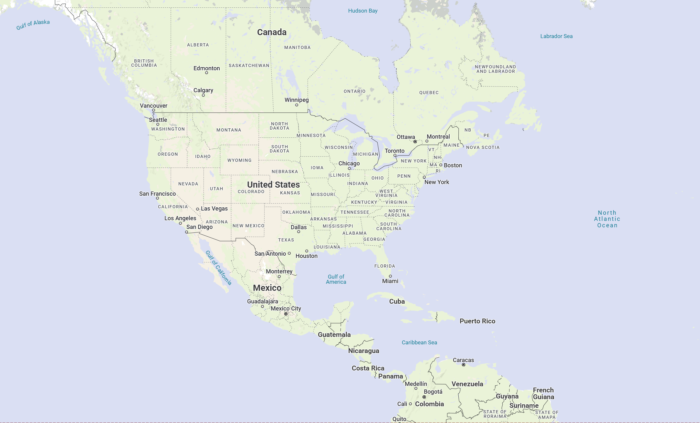
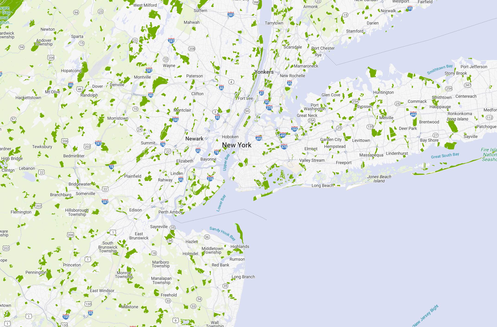
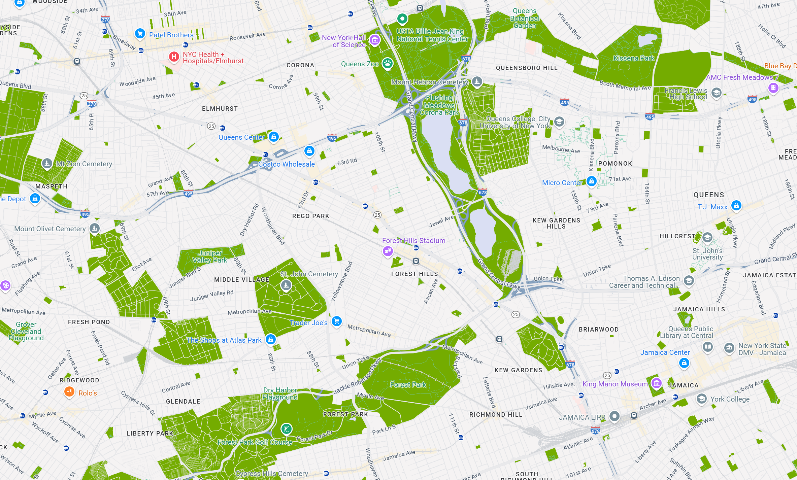

iNaturalist is a nonprofit social network that allows people to record and share observations of biodiversity worldwide. It supports citizen science by enabling users to upload photos, identify species, and contribute to global conservation efforts.
Founded in 2008 as a master’s project at UC Berkeley, iNaturalist has grown into a community of over 7 million users and 230 million+ observations. It plays a key role in environmental monitoring and public engagement with nature.
Learn more at iNaturalist.org.
[Your embedded or linked interactive map goes here]
Zoom Level 1:
Zoom Level 2:
Zoom Level 3:
| Feature Type | Element Type | Stylers |
|---|---|---|
| Road | Geometry | color: #XXXXXX |
To embed this map in your website, use the JSON file with the Google Map Styling Wizard or apply it via the Google Maps API in your JavaScript code.